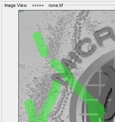

Did you know...
- Press of the C or Shift+C key shortcut to Clear the selection
- Press of the Ctrl + Z key shortcut to undo the drawing
- Hold the Ctrl key and use the left mouse button to erase the drawn areas
|  |
If you accidentally have drawn something by pressing the left mouse key you can fix that:
|